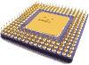

- 谷歌员工展示Project Glass拍照功能
- 在Google官方正式发布Project Glass之前就已经生产了大量的成品，一套Project Glass包括可以无线数据传输的显示屏，配置摄像头，GPS和运动传感器。近日Project Glass产品团队的员工周三接受TV访...[点击查看详情]

- [多图]Trinity APU幻灯片首爆：更多新特性
- study875发布于 2012-04-30 22:41:34 | 2773 次阅读 | 0次推荐
-
四月底到五月初将会是非常非常热闹的，继Ivy Bridge、GeForce GTX 690/670之后，Trinity APU也将会在这短暂的一个月之内登场。国外友站VR-Zone在今天“一不小心”爆出来Trinity APU的官方幻灯片，介绍了Trinity APU的架构以及性能对比等多方面的信息。
- 详细内容 | 已有9 个意见 | 2次打分 | 事件分:3分 | 质量分:2分
喷出互联网坑爹事，iPad等你拿
- 联发科将今年智能手机芯片发货量上调50%
- study875发布于 2012-04-30 22:39:23 | 1656 次阅读 | 1次推荐
-
据国外媒体报道，台湾IC设计厂商联发科(MediaTek)总经理谢清江在一个投资者会议上表示，该公司将今年全年智能手机芯片发货量目标从此前的5000万片上调至7500万片。联发科今年第一季度智能手机芯片发货量为1000万片，预计第二季度发货量将达到1800万至2000万片。谢清江预计，联发科第二季度合并营收将达到224亿元新台币至235亿元新台币(约合7.59亿美元至7.97亿美元)，较上一季度增长14%至20%。
- 详细内容 | 已有6 个意见 | 6次打分 | 事件分:2分 | 质量分:2分
20M独享双线每年只要7800
- 未来的 Bill Gates? 6 岁男童有望成为世界最年轻程式编写员
- study875发布于 2012-04-30 22:21:54 | 2926 次阅读 | 0次推荐
-
这位来自孟加拉的 6 岁男孩 Wasik Farhan-Roopkotha,7 个月大就已经使用他妈妈的电脑,3 岁时开始在 Word
打字。到了 4 岁就学懂一些 C++ 程式语言和下载游戏模拟器,现在他更是 Modern Warfare 和 Metal Gear Solid
的打机高手。年纪小小的 Roopkotha 说十分喜欢玩电脑和学习新技术,希望将来有望成为一流的程式编写员。他妈妈则希望囝囝能被
Microsoft 和 健力士认可,成为世界最年轻程式编写员。
- 详细内容 | 已有23 个意见 | 7次打分 | 事件分:-4分 | 质量分:-4分
香港Linux云主机 每月只要60
- [多图]NVIDIA GTX 690开箱图赏!要撬开的新旗舰显卡
- study875发布于 2012-04-30 22:10:20 | 5061 次阅读 | 0次推荐
-
相较于GTX 590的包装,这次媒体测试的GTX 690包装更夸张。用木盒紧紧地包起来,上面还钉上铁钉,要不是有上次的铁撬,这显卡就算拿到手也很难打开。外包装上有不少文字,其中一行写着“0b1010110010”,看起来有点眼熟,把这串文字丢到二进制转换器后,果然跑出「690」这个答案。不过剩下的“BT-7.080”、“G08-H86-A000”就实在猜不出来是什麽意思(猜出来也没奖品就是了)。
- 详细内容 | 已有36 个意见 | 18次打分 | 事件分:3分 | 质量分:3分
明道 - 引领中国企业2.0
- iPhone在中国潜力巨大 2013年销量将突破3500万
- ugmbbc发布于 2012-04-30 21:35:19 | 2770 次阅读 | 1次推荐
-
意志银行（Deutsche Bank）分析师Chris
Whitmore相信iPhone在中国的潜力仍然非常巨大，他认为中国电信和中国联通两大运营商在2013年底3G用户将达到3亿人。如果苹果能与最大
运营商中国移动合作，那么2013年底3G用用户将会再次增加1.25亿。这就是说明年中国的3G用户将能达到4.25亿。
- 详细内容 | 已有43 个意见 | 10次打分 | 事件分:-3分 | 质量分:-3分
买男装首选雷迪博格
- 全球首款声控USB闪存出现
- ugmbbc发布于 2012-04-30 21:33:04 | 2266 次阅读 | 1次推荐
- 
保存在闪存中的文件安全性正越来越受到重视，许多U盘厂商都推出了用各种方式给数据加密的方法，不过再严密的加密方法也很难超越生物传感器的能力。Hammacher Schlemmer今天推出的产品就是这样一种，它是可以通过语音来保护USB闪存的驱动器，只要设定声控密码后，这款U盘只能听主人的语音指令，有人认为这种声音加密技术比目前256位AES来得更为安全。
- 详细内容 | 已有13 个意见 | 2次打分 | 事件分:5分 | 质量分:5分
蚕乡人家的百分百桑蚕丝被
- 第三代Apple TV登陆巴西，价格依然全球最贵（$219）
- study875发布于 2012-04-30 21:29:21 | 3005 次阅读 | 1次推荐
-
今天苹果第三代Apple TV正式登陆巴西，但是与其他苹果产品一样，Apple TV的售价为219美元。美国地区Apple TV的售价只有99美元。新款Apple TV搭载单核A5处理器，内存增加，可以播放1080p高清视频。
- 详细内容 | 已有11 个意见 | 5次打分 | 事件分:-1分 | 质量分:-1分
企业免费即时通讯软件
- 索尼Xperia RAY ST18i接班人Xperia SX规格泄露
- ugmbbc发布于 2012-04-30 21:34:09 | 4587 次阅读 | 3次推荐
-
感谢匿名人士的投递
新闻来源:weiphone
根据日本科技博客ameblo消息透露，索尼移动通信（Sony Mobile）和日本本土运行商NTT DoCoMo已经准备好 Sony Xperia 系列新机的发布工作，其中包括一款名为“Sony Xperia SX SO-05D”智能手机，被称之Sony Ericsson Xperia RAY ST18i的后继接班机子。
- 详细内容 | 已有22 个意见 | 6次打分 | 事件分:3分 | 质量分:3分
cnBeta.COM iOS阅读器
- LG:暂无进一步推出Windows Phone产品的打算
- ugmbbc发布于 2012-04-30 20:56:56 | 1934 次阅读 | 0次推荐
-
LG是最早推出Windows Phone系统手机的厂商，不过短暂的辉煌过后，公司似乎已经开始重新审视WP平台的价值。LG发言人今天表示近期没有发布更多Windows Phone产品的计划，这很有可能和LG的WP机型在全球市场上的销售数量有关（据称该数字已经到了“没有意义”的程度）。
- 详细内容 | 已有19 个意见 | 6次打分 | 事件分:0分 | 质量分:-1分
海归博士团队 定制化企业软件
- 微软向美国最大图书零售商巴诺投资3亿美元
- ugmbbc发布于 2012-04-30 20:46:38 | 1532 次阅读 | 3次推荐
-
微软和美国第一大图书零售商巴诺(Barnes & Noble)当地时间周一宣布，微软将对巴诺投资3亿美元，巴诺将整合旗下数字和大学业务，成立一家新公司。根据协议，新公司估值为17亿美元，微软将获得新公司17.6%的股份，巴诺持股比例为82.4%。尚未命名的新公司将与巴诺零售店存在合作关系。
- 详细内容 | 已有4 个意见 | 4次打分 | 事件分:5分 | 质量分:5分
交友新体验 尽在达人社
- 澳洲富豪将建造超级邮轮21世纪的“Titanic II” 委托中国造船厂
- ugmbbc发布于 2012-04-30 20:44:28 | 7522 次阅读 | 7次推荐
-
感谢匿名人士的投递
新闻来源:雅虎澳洲
澳大利亚矿业大亨Clive Palmer与中国金陵造船厂达成协议，将共同建造21世界版本的泰坦尼克号。Palmer说这是为了纪念泰坦尼克号。
和原本的泰坦尼克号一样，游轮将有840个房间和9个甲板。
- 详细内容 | 已有54 个意见 | 17次打分 | 事件分:1分 | 质量分:-0分
博通传媒
- 华尔街日报：无反光镜相机将是下一个市场焦点
- ugmbbc发布于 2012-04-30 17:49:58 | 9035 次阅读 | 7次推荐
-
华尔街日报今日刊发文章，称无反光镜相机将是相机厂商下一个市场焦点，以下是全文：在选购较高端的数码相机时，摄影爱好者通常不是选择佳能（Canon）就是选择尼康（Nikon）。但有一批电子产品企业对笨重的专业相机进行了重新打造，生产出造型更优美、价格也更实惠的相机，正在对佳能和尼康的垄断构成威胁。
- 详细内容 | 已有22 个意见 | 12次打分 | 事件分:1分 | 质量分:2分
网络视频会议系统
- 亚马逊将从7月起向美德州政府缴纳营业税
- ugmbbc发布于 2012-04-30 16:34:39 | 2116 次阅读 | 1次推荐
-
据国外媒体报道， 亚马逊公司和德克萨斯州的财务部门达成协议，从今年7月1日开始，亚马逊将会向德州开始缴纳营业税，另外根据这份协议，亚马逊将在德州境内建立工厂并创造2500个工作岗位。之前德州政府曾尝试向亚马逊补征之前未缴的2.69亿美元的营业税，在这之后双方达成协议。根据协议，亚马逊同意开始缴纳营业税，并且将在今后的4年内在德州建立配送中心。
- 详细内容 | 已有0 个意见 | 23次打分 | 事件分:-4分 | 质量分:-3分
好用的多语种词典 - 灵格斯词霸
- EA注册《模拟海洋》商标 将推出相关新作？
- ugmbbc发布于 2012-04-30 16:30:59 | 3616 次阅读 | 1次推荐
-
感谢itstrike的投递
新闻来源:3DMGame
EA日前已经对《模拟海洋》（SimOcean）进行了商标注册！EA日前已经对《模拟海洋》（SimOcean）进行了商标注册！这份于4月25日签署的注册文件是最先被外国网站Siliconera发现的（而我们却无法在美国专利与商标署的资料库里找到这份文件）。不过文件中没有公布任何有用的消息。
- 详细内容 | 已有20 个意见 | 3次打分 | 事件分:0分 | 质量分:1分
Leica中文摄影杂志
- 日本开发出用于振动发电新合金
- ugmbbc发布于 2012-04-30 16:30:04 | 3883 次阅读 | 3次推荐
-
感谢法士特资讯的投递
新闻来源:科技日报
日本弘前大学研究生院理工学研究科教授古屋泰文率领的研究小组25日宣布，他们开发出一种新型铁钴合金，在微小的晃动下就能产生电力，其振动发电的效率是铁镓合金的约2.5倍，是陶瓷材料的10倍。振动发电指将振动机械能转换成电能，其作为一种新能源，吸引着各国科学家从事研究。
- 详细内容 | 已有29 个意见 | 9次打分 | 事件分:4分 | 质量分:4分
中国一购 全国联盟 统一折扣
- 雅虎研究院首席科学家沃兹离职转投微软
- ugmbbc发布于 2012-04-30 16:26:01 | 2253 次阅读 | 1次推荐
-
雅虎研究院首席科学家邓肯·沃兹(Duncan Watts)已经离开公司。据称，沃兹已经加入微软研究机构，但微软对此拒绝发表评论。沃兹2007年以来一直在雅虎供职，对于沃兹离开公司的消息，雅虎已经予以证实。沃兹是一位澳大利亚人，拥有物理和应用力学学位，研究社会网络和社会动力学。
- 详细内容 | 已有12 个意见 | 1次打分 | 事件分:-5分 | 质量分:-5分
手机版CB：m.cnbeta.com
- 手机二手交易藏猫腻 商贩玩“破拆”把戏
- ugmbbc发布于 2012-04-30 16:24:20 | 8576 次阅读 | 4次推荐
-
先说要拆开手机检查，进而将零件损坏，最后压低价格——如此“破拆把戏”使得丰台区木樨园地区手机市场纠纷频发，仅4月就连发多起伤害案件。为此，记者对木樨园卖场外手机交易行为进行了半个月的观察和体验，以期揭开其中的秘密。
- 详细内容 | 已有29 个意见 | 17次打分 | 事件分:-4分 | 质量分:-2分
- 美去年手机垃圾短信增45%至45亿条 致用户愤慨
- ugmbbc发布于 2012-04-30 16:23:20 | 879 次阅读 | 0次推荐
-
去年美国的手机垃圾短信数理大幅增长，此举也引发了美国用户的极度愤慨。多年以来，这些不受欢迎的垃圾信息一直充斥了用户电子邮件的收件箱中，如今随着越来越多的用户开始大量使用智能手机来替代个人电脑，这些垃圾信息也开始越来越流行，并大量涌入用户的手机之中。
- 详细内容 | 已有8 个意见 | 3次打分 | 事件分:0分 | 质量分:3分
- [视频]全球首款 Intel 智能机 X900 开箱试用
- youyoulan发布于 2012-04-30 15:06:35 | 18374 次阅读 | 6次推荐
-
感谢iplaymid.com的投递
新闻来源:engadget
一直受大众关注的Intel平台手机，已经在印度正式上市。作为首款Intel平台手机，Lava Xolo X900最大卖点为搭载1.6GHz Intel Medfield Z2460处理器，集成的Power SGX 540图形核心频率为400MHz，高于Galaxy Nexus等采用TI OMAP 4460的产品。
- 详细内容 | 已有70 个意见 | 25次打分 | 事件分:1分 | 质量分:1分
- 香港研制出“脑机接口”系统
- ugmbbc发布于 2012-04-30 13:47:09 | 6325 次阅读 | 9次推荐
-
感谢法士特资讯的投递
据新华社香港4月29日电香港特区政府新闻网29日消息，香港中文大学日前成功研制出一个“脑机接口”系统，可将脑电波转换成繁体中文字，让全身瘫痪而无法说话的病人有机会打开心窗。据介绍，病人只要戴上有16个接触面的无线脑电波接收器，面向计算机屏幕上的中文笔画输入接口，想着自己要写的笔画，接收器便能接受到指令，将中文字逐笔写出来。
- 详细内容 | 已有36 个意见 | 20次打分 | 事件分:3分 | 质量分:3分
- 过度使用电子产品或降低智力 众家长大战iPad
- ugmbbc发布于 2012-04-30 13:46:20 | 4911 次阅读 | 2次推荐
-
感谢douyin的投递
新闻来源:重庆晚报
科技越来越发达，孩子们手上的电子产品越来越多。昨天，重庆晚报有关过度使用iPad、iPhone等电子产品，降低孩子智力的报道(4月29日07版)引起强烈反响。重庆晚报24小时新闻热线966988半天就接到几十个家长的电话，分享自己与电子公害斗智斗勇的故事。
- 详细内容 | 已有33 个意见 | 25次打分 | 事件分:-3分 | 质量分:-3分
- 澳洲议员炮轰微软和苹果的地域物价差异歧视
- ugmbbc发布于 2012-04-30 13:45:24 | 3419 次阅读 | 4次推荐
-
感谢智乐网的投递
智能手机市场应用定价策略往往会让很多用户捉摸不透，尤其是同一款应用在不同国家和地区的差异化定价措施。这种定价措施有人欢喜有人愁。很明显的例子如Apple Store中国市场，部分应用的价格折算成美元并不对等，或者说要便宜很多，这没少让用户暗暗窃喜捡了小便宜。但是在澳大利亚，微软和苹果市场应用定价折算成美元要高于其他地区的时候，澳洲用户就一改窃喜而直接炮轰，要求微软和苹果等公司解释为何相同的音乐以及游戏下载服务，澳大利亚的收费会明显高于美国？
- 详细内容 | 已有20 个意见 | 8次打分 | 事件分:1分 | 质量分:1分
- Ubuntu Server 12.04 的新特性一览表
- ugmbbc发布于 2012-04-30 13:44:49 | 8521 次阅读 | 8次推荐
-
感谢baobao的投递
新闻来源:oschina
Ubuntu 12.04 (代号为 Precise Pangolin)
版本主要侧重于发布、稳定性和质量。Ubuntu 12.04 包含最新的代号为 Essex 的 OpenStack 版本，以及一项名为 MAAS
的新特性。此外，可使用 Juju 轻松的部署集中式的 CharmStore 。还包含一项名为 AWSOME 的新技术。
- 详细内容 | 已有12 个意见 | 12次打分 | 事件分:3分 | 质量分:3分
- 正统小黑ThinkPad X230和X230t 2012款规格泄露
- ugmbbc发布于 2012-04-30 13:43:32 | 15222 次阅读 | 3次推荐
-
感谢zm的投递
新闻来源:威锋网
近日，外媒laptoping通过谷歌搜索对瑞典ThinkPad Center缓存页面进行挖掘，寻找到了联想新款超轻薄笔记本ThinkPad X230 和 X230t 的被泄露的规格参数。
- 详细内容 | 已有47 个意见 | 31次打分 | 事件分:-3分 | 质量分:-4分
- LG在韩国发布Cloud云服务
- ugmbbc发布于 2012-04-30 13:42:35 | 1260 次阅读 | 1次推荐
-
LG今天在韩国发布了LG Cloud云服务的Beta版，顾名思义这是一个类似于苹果iCloud的云服务，可快速在网络上保存音乐、视频和智能手机上的个人信息，同时还支持为LG的3D屏幕手机保存3D内容，并实现实时解码播放。每位LG手机用户可获得2GB空间，部分型号用户可获得5GB，付费后最大可扩展到50GB，其客户端支持Android 2.2以上手机、Windows XP、Windows 7等。
- 详细内容 | 已有7 个意见 | 5次打分 | 事件分:-1分 | 质量分:-1分
- 惠普Pavilion dv6和dv7系列新本发布
- ugmbbc发布于 2012-04-30 13:38:46 | 3627 次阅读 | 4次推荐
-
惠普Pavilion dv6和dv7系列新本今日发布，搭配Ivy Bridge处理器，采用铝金属外壳，边缘采用圆弧式处理。新推出的Pavilion dv6和dv7系列笔记本搭载4.1声道Beats音频系统，在键盘上方内置两个扬声器，屏幕边框有另外两个扬声器。底座则内置有低音喇叭。孤岛式键盘带有背光。
- 详细内容 | 已有15 个意见 | 6次打分 | 事件分:0分 | 质量分:0分
- 《暗黑破坏神3》最新电视广告：邪灵归来
- ugmbbc发布于 2012-04-30 13:36:18 | 10524 次阅读 | 2次推荐
-
熟悉的背景音乐，完美的吉他，暗黑迷们是否已经等不及了？
《暗黑破坏神3》已经开始公测，5月15日正式发布已经不是什么秘密了，暴雪方面也加大了推广力度，全新的电视广告《Evil is Back（邪灵归来）》日前上线，下面让我们来先睹为快。
- 详细内容 | 已有20 个意见 | 11次打分 | 事件分:3分 | 质量分:5分
- 自然之绘：3600块LCD玻璃板创造出来的美丽
- ugmbbc发布于 2012-04-30 13:34:16 | 5433 次阅读 | 4次推荐
-
用LCD玻璃板就能创造出自然之美？不管你信不信反正在看过北卡罗来纳自然科学博物馆的“自然之绘”（Patterned by Nature）后我们是信了。这件展品宽10英尺、长90英尺，由3,600块6寸大小的LCD玻璃板组成。每块玻璃板都是一个画素，可以通过改变各自的透明度来呈现出20种不同的自然景观（小到细菌大到黑洞），配合8声道背景音播放，一幅犹如大自然绘制的画卷就生动的展现在你面前了。
- 详细内容 | 已有11 个意见 | 8次打分 | 事件分:2分 | 质量分:2分
- 体验经济：互联网生存秘密
- ugmbbc发布于 2012-04-30 13:30:21 | 3481 次阅读 | 4次推荐
-
作者以四个互联网创新的小故事诠释了做互联网产品的秘诀：多想想怎样才能让产品有趣。下面四个小故事，能帮你一窥互联网生存的小秘密。
也许你正苦思冥想上线哪个功能来吸引用户。
也许你正研究竞争产品，总结对手的成功经验。
也许你正激情四射，摩拳擦掌打算创造自己的事业。
- 详细内容 | 已有9 个意见 | 13次打分 | 事件分:-1分 | 质量分:-1分
- 北斗首发“一箭双星” 中国导航加速组网
- ugmbbc发布于 2012-04-30 13:28:31 | 5567 次阅读 | 12次推荐
-
中国第十二、第十三颗北斗导航系统组网卫星，30日凌晨在西昌卫星发射中心由“长征三号乙”运载火箭以“一箭双星”方式成功发射升空。这是中国正在
实施的自主发展、独立运行的全球卫星导航系统——北斗卫星导航系统首次采用“一箭双星”方式发射导航卫星，也是中国首次采用“一箭双星”方式发射两颗地球
中高轨道卫星。
- 详细内容 | 已有0 个意见 | 131次打分 | 事件分:2分 | 质量分:1分
- 华尔街日报：中国电子商务企业盈利难
- ugmbbc发布于 2012-04-30 13:27:13 | 3155 次阅读 | 2次推荐
-
华尔街日报作者Tom Orlik今日撰文指出，中国电子商务企业盈利难。以下是原文：
比中国电子商务领域增长更快的，似乎只剩下业内企业为争夺市场份额而烧钱所导致的亏损了。
- 详细内容 | 已有16 个意见 | 6次打分 | 事件分:2分 | 质量分:-0分
- 《暗黑破坏神3》制作已全部完成 70%内容已解锁
- ugmbbc发布于 2012-04-30 10:54:27 | 10268 次阅读 | 5次推荐
-
《暗黑破坏神3》官方70%内容已经解锁，本次放出《开发日记》第四部分的视频。时间是2012年3月21日，下午1点30分。游戏已经完成了，真的！暗黑3的游戏总监Jay Wilson；暗黑3的美术总监Christian Lichtner以及暗黑3项目首席软件工程师Jason Regier已经无法掩饰内心的兴奋，但距离发售还有一段时间。
- 详细内容 | 已有34 个意见 | 13次打分 | 事件分:4分 | 质量分:4分
- Wine 1.5.3开发版发布
- youyoulan发布于 2012-04-30 10:52:56 | 4851 次阅读 | 4次推荐
-
Wine是一款灰常优秀的、开源的Linux系统平台下的模拟器软件，它做为一个兼容层可让你在Linux系统平台下执行Windows应用程序。Wine本身并不需要Windows的支持，因为它是一个完全免费的、替代Windows API组成、100 ％非微软的源代码软件，但是Wine可以选择使用本地的Windows DLLS，如果它们可用。
- 详细内容 | 已有10 个意见 | 5次打分 | 事件分:3分 | 质量分:4分
- 可替代Cydia的第三方应用商店Lima
- ugmbbc发布于 2012-04-30 10:50:41 | 9265 次阅读 | 3次推荐
-
感谢安卓的投递
新闻来源:weiphone
多年来，市面上偶尔会出现一些替代或补充Cydia的第三方应用商店，Lima就是其中的一个。但与其他替代商店不同的是，Lima完全基于浏览器体验。
以下为文章全文：
- 详细内容 | 已有20 个意见 | 7次打分 | 事件分:1分 | 质量分:1分
- Lumia 800发布新升级 修复多个Bug
- ugmbbc发布于 2012-04-30 10:50:11 | 7395 次阅读 | 8次推荐
-
感谢威智网Wper的投递
据国外媒体报导，诺基亚为Lumia
800发布了新固件升级，代号为1600.2487.8107.12072。据介绍，8107.12072升级主要用于修复声音问题。此前曾有用户报导
称，Lumia 800存在声音问题，导致游戏体验变得“非常痛苦”。另外，此声音问题还表现在，当有来电时，第一秒的铃声音量非常大。
- 详细内容 | 已有27 个意见 | 13次打分 | 事件分:2分 | 质量分:2分
- 过生日 Google主页为您制作专属doodle
- ugmbbc发布于 2012-04-30 10:49:46 | 9835 次阅读 | 10次推荐
-
感谢awayslee的投递
今天生日，早上上班习惯打开Google主页，已经用Google账号登录，在Google profiles设置的是今天生日，结果一打开Google的主页发现了一个新的doodle，并显示着“生日快乐，宁！”，让我心情大好，感动不已，这也让我对Google的爱又增加了许多。
- 详细内容 | 已有27 个意见 | 25次打分 | 事件分:2分 | 质量分:1分
- 苹果借投诉获Applecom/ApplePrinters域名
- ugmbbc发布于 2012-04-30 10:48:26 | 1116 次阅读 | 1次推荐
-
通过向世界知识产权组织（World Intellectual Property Organization，WIPO）提交诉讼，苹果日前获得了
Applecom.com和ApplePrinters.com域名的所有权。目前，当用户访问上述两个域名时，将被重新导向苹果的官方网站。
- 详细内容 | 已有7 个意见 | 7次打分 | 事件分:-1分 | 质量分:-2分
- 传苹果开始与美国电视服务商恰谈“iTV”
- ugmbbc发布于 2012-04-30 10:47:31 | 973 次阅读 | 0次推荐
-
据消息人士透露，苹果已经开始与Epix（美国知名电视服务商，视频流媒体供应商）进行合作恰谈，合作内容就是传说中的“iTV”。据消息称，从表面上看苹果与Epix进行的协商只是为了让Apple TV引进更多的影视作品内容。但是有知情人士指出，除了Apple TV之外，苹果未来的高清智能电视产品也包含在本次谈判之中。
- 详细内容 | 已有5 个意见 | 3次打分 | 事件分:-2分 | 质量分:-2分
- 行车记录仪监控疲劳驾驶 超4小时响警报
- ugmbbc发布于 2012-04-30 10:45:43 | 1783 次阅读 | 1次推荐
-
早报记者昨日获悉，近日，一种能提醒大巴司机注意行车安全的“行车记录仪”已悄悄出现在部分旅游大巴上，一旦超过规定的连续驾驶4小时的时间上限，这一仪器就会提醒驾驶员，已到时间应该“换岗”了，以防止疲劳驾驶，保障行车安全。
- 详细内容 | 已有7 个意见 | 3次打分 | 事件分:-2分 | 质量分:-2分
- 分析称诺基亚在新兴市场中的表现并不乐观
- ugmbbc发布于 2012-04-30 10:44:49 | 1884 次阅读 | 1次推荐
-
诺基亚手机曾经是印度孟买手机商店销售的骄傲，但现在这个荣誉已经被三星公司获得。不仅在印度，在其他的新兴市场国家的手机商店中都存在这种情况。诺基亚公司的竞争对手在市场中的发展势头都很乐观。
- 详细内容 | 已有9 个意见 | 4次打分 | 事件分:-3分 | 质量分:-3分
- 戴尔高管称首款超极本XPS 13供不应求
- ugmbbc发布于 2012-04-30 10:43:36 | 7613 次阅读 | 3次推荐
-
据国外媒体报道，戴尔负责消费者和中小企业产品事业部的副总裁萨姆·伯德（Sam Burd）称，戴尔第一款XPS 13超极本的销售远远好于预期。这为这种新一类笔记本电脑带来了希望。伯德表示，戴尔今年1月推出的高端XPS 13超极本需求强劲。戴尔目前不能制造足够的这种产品以满足需求。戴尔的产量还达不到XPS 13超极本预期的需求。但是，伯德不愿意具体讨论这个事情。他说，戴尔从来不披露数字。
- 详细内容 | 已有36 个意见 | 12次打分 | 事件分:1分 | 质量分:2分
- 微软WP销售良好 或因运营商厌倦接受苹果订单
- ugmbbc发布于 2012-04-30 10:43:09 | 4492 次阅读 | 3次推荐
-
AT&T公司目前正在计划发起新的市场营销策略，目的在于提高诺基亚Lumia 900的销售量。AT&T运营商在推动
Lumia 900的销售方面已经花费了很大的力气。购买者都赞扬AT&T店面的销售人员，夸他们在推荐该款智能机的时候对其设备非常了解，相关
知识也非常丰富。从目前的状况来看，似乎他们所作出的努力已经有了很好的结果，AT&T公司报道称Lumia 900的销售情况已经超过了他们的
预期。
- 详细内容 | 已有33 个意见 | 11次打分 | 事件分:-0分 | 质量分:-1分
- 邮政速递去年盈利9亿 IPO或冲击国内快递市场
- ugmbbc发布于 2012-04-30 10:42:25 | 2034 次阅读 | 1次推荐
-
早报讯 “官网第一股”人民网（603000）刚刚登陆上海证券交易所，A股市场很快又将迎来另一个大盘股。根据中国证监会昨日发布的消息，证监会发审委将于5月4日召开今年第77次发审委会议，审核中国邮政速递物流股份有限公司（下称中邮速递）的首次公开募股（IPO）申请。
- 详细内容 | 已有15 个意见 | 18次打分 | 事件分:-5分 | 质量分:-5分
- 苹果发表声明回应避税批评 强调创造大量岗位
- ugmbbc发布于 2012-04-30 10:41:41 | 1494 次阅读 | 0次推荐
-
苹果今天针对有关对该公司每年避税数十亿美元的批评发表声明，称公司创造了“数量惊人的工作岗位”。苹果的声明是对《纽约时报》昨天一篇报道的回应。《纽约时报》将苹果描绘为避税先驱，其他公司纷纷借鉴了苹果的做法，“苹果已经成为科技公司利用面向工业时代、不适合数字经济的税法的窗口”。
- 详细内容 | 已有13 个意见 | 15次打分 | 事件分:-0分 | 质量分:1分
- iPhone QQ通讯录越狱版：支持来去电归属地显示
- youyoulan发布于 2012-04-30 09:15:40 | 9151 次阅读 | 1次推荐
-
近日，iPhone版QQ通讯录越狱版3.4发布，破除了iPhone未解锁版对第三方通讯录的各种限制，让用户可以通过QQ通讯录越狱版感受全量通话记录、通话界面显示归属地等功能。
QQ通讯录越狱版的安装方法：
- 详细内容 | 已有42 个意见 | 12次打分 | 事件分:-1分 | 质量分:-2分
- NASA计划建造世界第一架“静音”超音速飞机
- youyoulan发布于 2012-04-30 09:12:36 | 4444 次阅读 | 5次推荐
-
据国外媒体报道，美国宇航局的科学家近日表示，他们计划建造全世界第一架“静音”超音速飞机，为实现超音速空中旅行打下基础。美国宇航局的一个科学家团队计划使用小型无人驾驶飞机进行一系列的研究试飞，测试飞机在通过声障时的表现。从这些测试获得的数据最终将被用于创建能够通过声障而不会造成音爆的超音速飞机和高超音速飞机。巨大的噪音是超音速空中旅行从未真正得到很好地发展的原因之一。
- 详细内容 | 已有16 个意见 | 12次打分 | 事件分:3分 | 质量分:3分
- 腾讯微博Android 3.6.0版登场 新增微相册分享
- youyoulan发布于 2012-04-30 09:07:25 | 3314 次阅读 | 3次推荐
-
专为Android平台打造的腾讯微博Android版全新发布3.6版本，新增微相册分享功能，快和好友分享相册，分享故事；新版广场闪亮登场，为你打造更丰富的内容；推荐收听加入分类功能，更快更精准地找到感兴趣的人；还有自由复制的实用功能等你来体验！快来腾讯微博记录你的生活点滴，与好友一起分享喜悦！
- 详细内容 | 已有10 个意见 | 7次打分 | 事件分:-4分 | 质量分:-4分
- 微软宣布已修复Hotmail漏洞
- youyoulan发布于 2012-04-30 09:03:18 | 2041 次阅读 | 2次推荐
-
据国外媒体报道，微软日前宣布，已修复Hotmail一项密码重置系统漏洞，该漏洞允许黑客控制网络邮箱账户。据悉，该漏洞存在于Hotmail密码重置功能，黑客能够使用Firefox浏览器插件Tamper Data拦截HTTP重置密码要求，更改数据，锁定并进入用户账户。
- 详细内容 | 已有8 个意见 | 2次打分 | 事件分:0分 | 质量分:0分
- Google员工称不知道街景汽车收集用户数据
- youyoulan发布于 2012-04-30 08:55:53 | 1660 次阅读 | 1次推荐
-
北京时间4月30日消息，据国外媒体报道，美国联邦通信委员会(以下简称“FCC”)在一份报告中称，尽管一名工程师披露了详细信息，Google街景团队员工向该机构表示，他们最初不知道存在收集用户个人数据的软件。
- 详细内容 | 已有10 个意见 | 7次打分 | 事件分:-1分 | 质量分:-1分
- 科学家克服核聚变障碍 “人造太阳”或将升起
- youyoulan发布于 2012-04-30 08:51:56 | 6503 次阅读 | 10次推荐
-
据国外媒体报道，“核聚变”是驱动宇宙运行的能源，在每一颗燃烧的恒星的核心都发生着剧烈的核聚变反应。如果想要在地球上人工创造一颗“人造小太阳”，那么将是非常困难的。因为使相互排斥的带同种电荷的原子核靠近并发生融合需要很大的能量。更麻烦的是，如果进一步给核聚变等离子体增加能量，那么就会导致整个核反应过程崩溃而停止。现在，来自能源部“普林斯顿等离子体物理实验室”（Princeton Plasma
Physics Laboratory）的研究人员或已经为该问题找到了一个合理的解释和解决方案。
- 详细内容 | 已有28 个意见 | 24次打分 | 事件分:4分 | 质量分:4分
- 电脑摄像头像素“缩水” 商家自曝真实内幕
- ugmbbc发布于 2012-04-30 07:52:13 | 12355 次阅读 | 5次推荐
-
五一假期到了，电子产品开始热销，不过记者调查后发现，里面的门道很多。就拿电脑摄像头来说，商家说的像素和实际像素差别就很大，如果你不留意，很可能就被骗了。今天上午，记者来到西安雁塔路附近的一家电子市场，在摄像头专区每一家柜台的前面都摆满了各种各样的视频摄像头，除了样式五花八门以外，价位也是高低不等。
- 详细内容 | 已有33 个意见 | 32次打分 | 事件分:-2分 | 质量分:-2分
- 面向HTC One X的CyanogenMod 9发布
- ugmbbc发布于 2012-04-30 07:51:28 | 10041 次阅读 | 3次推荐
-
HTC One X终于迎来了属于自己的CyanogenMod 9修改版系统，今天TripNDroid Mobile Engineering team公布了可用于这台旗舰机型的最新ROM，不过可惜的是现在这一版本似乎还并不适合刷入，因为相机和WiFi热点的特性还无法被启动，但电话、短信、移动数据等功能已经可以工作。
- 详细内容 | 已有21 个意见 | 7次打分 | 事件分:4分 | 质量分:3分
- 传诺基亚将2亿欧元出售Vertu品牌
- ugmbbc发布于 2012-04-30 07:45:00 | 5714 次阅读 | 1次推荐
-
金融时报今天报道称诺基亚将出售其超优质手机子公司Vertu，这一消息早在去年12月就已经传出，而现在看来诺基亚开始接近取得一项初步的协议。买家是私人股本集团Permira公司，价格约2亿欧元。
- 详细内容 | 已有25 个意见 | 6次打分 | 事件分:-1分 | 质量分:-3分
- 新西兰将可以用NFC设备坐公交
- ugmbbc发布于 2012-04-30 07:41:07 | 1381 次阅读 | 1次推荐
-
新西兰部分城市的交通系统已经开始宣布试用手机钱包的解决方案，这意味着人们将可以用配备NFC的电子设备来支付车钱。目前Auckland Transport, Telecom NZ和Westpac三家公司共同组建的一个包含30名工作人员的团队已经在新西兰建立自己的支付解决方案，Android、iOS和Windows Phone系统都将得到支持。
- 详细内容 | 已有12 个意见 | 4次打分 | 事件分:3分 | 质量分:3分
- Maingear发布两款桌面台式机 垂直散热技术
- ugmbbc发布于 2012-04-30 07:37:01 | 3378 次阅读 | 3次推荐
-
PC制造商Maingear发布了两款桌面PC产品F131和Potenza，它们和以往的PC产品最大的区别在于小尺寸机箱带来了垂直散热系统，同时对超频的支持能力也相当强。风扇从底部吸入冷空气，而热空气按照物理原理上升到顶端后排除，同时还在机箱中配备了吸入式光驱。配备GeForce GTX680显卡的Portenza基础版价格为899美元， Maingear F131的起始价格1049美元。
- 详细内容 | 已有11 个意见 | 4次打分 | 事件分:-1分 | 质量分:-3分
- 调查显示母亲节 妈妈们也想要平板
- ugmbbc发布于 2012-04-30 07:32:33 | 2280 次阅读 | 1次推荐
-
5月13日母亲节，女人们想要什么？孩子和爸爸们一定很想知道这个问题的答案，Harris Interactive进行的一项调查已经有了最后的结论，即便是有了孩子们的母亲也很“潮”，18岁以下孩子的母亲除了鲜花，珠宝首饰，温泉，糖果之外，这次在最想要的名单之中有了平板/智能手机。
- 详细内容 | 已有20 个意见 | 4次打分 | 事件分:3分 | 质量分:-2分
- 传苹果和谷歌股票有望加入道琼斯指数
- ugmbbc发布于 2012-04-30 07:28:50 | 1528 次阅读 | 1次推荐
-
科技产业正在成为传统工业的一部分？有关公司的走向，股票市场总是最灵敏的，有消息称苹果和谷歌的股票可能会加入道琼斯工业平均指数，这个创建于19世界的股票市场一直是全球金融市场的核心。而苹果的市值又高达5630亿美元，是世界上最有价值的公司。
- 详细内容 | 已有3 个意见 | 2次打分 | 事件分:-5分 | 质量分:-5分
- [图]Origin PC发布11英寸游戏笔记本Origin EON11-S
- ugmbbc发布于 2012-04-30 07:23:35 | 2557 次阅读 | 2次推荐
-
电脑厂商Origin今天宣布了一款11英寸的游戏笔记本Origin EON11-S，它实际上是原有Clevo产品线的升级版，入门 版带来了Ive Bridge芯片Core i7-3612QM，11.6英寸屏幕，GeForce GT 650M开普勒显卡，2GB内存，而价格为999美元起。如果花1724美元或1724美元，可以买到17及17英寸版本，它们将配备Core i7-3610QM。
- 详细内容 | 已有13 个意见 | 2次打分 | 事件分:5分 | 质量分:5分